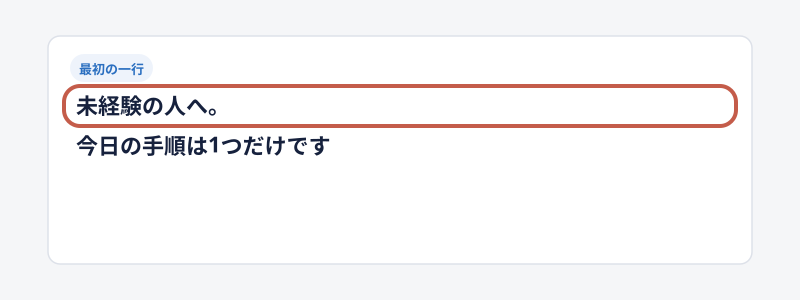

題と1行目 47
読者の名指し◯◯の人が／◯◯でもできる

なぜ開く 自分の属性を呼ばれると、自分宛ての記事だと気づきます。
形 属性は頭か述語の直前に1語で置きます。YouTube運営者、副業初心者のように、読む人が自分をそう呼ぶ語を使います。
具体すぎる属性は、自分が入れなくなります。条件を長く並べると前置きになります。
- X副業初心者でも「30分」だけで月60万まで届かせるClaudeプロンプト7個 いいね 171 / 保存 538 / 2026-09
- note大手3社で担当者ガチャに負けた俺が、50人の取材で見つけた20代向け転職エージェント3選 いいね 2,101 / 2026-09
低い入口経験ゼロでも／初期費用0円で／顔出しなし

なぜ開く 条件の低さを重ねるほど、自分にもできると感じます。
形 顔出しなし、未経験、初期費用0円のような短い定番語を、得の直前に置きます。
自分で言い換えた長い条件は、前置きに見えます。
- note未経験から、Claude CodeでiOSアプリ開発。2ヶ月目に月10万円 いいね 989 / 2026-09
- notenoteで月5万を自動化する方法｜初心者でもSNSなしで売れ続ける仕組み いいね 3,655 / 2026-09
悩みの名指し毎日の困りごとが消えない問題
なぜ開く 毎日困っている場面を名指しされると、自分のことだと分かります。
形 悩みの横に、解決か得を同じ1行に置きます。
悩みの事実だけで終わると、損得がありません。
- note脱・汚部屋したADHDから、片付けられないあなたへ捧げる考えない片付け術 いいね 6,991 / 2026-09
- XAstraでSubagent利用するとUsage消費ペースが激しすぎる問題への対策 いいね 1,193 / 保存 1,998 / 2026-09
大きな実額月◯万円／全部で◯◯円稼いだ話
なぜ開く 読む人が自分の財布と直接比べられます。
形 月の収入や利益、再生数など、欲しい単位で1つだけ大きく置きます。
割合と倍率は使いません。良いか悪いか分からない数字は減点です。
- note僕が20年で39億稼いだコピーライティングノウハウを全部AIに喰わせたら いいね 4,894 / 2026-09
- X【月120万達成】Claude × 海外アフィで資産構築（プロンプト公開中） いいね 537 / 保存 1,816 / 2026-09
時間が戻る月◯時間を取り戻した／◯時間→◯時間

なぜ開く 時間は全員が足りません。大きいほど使い道まで想像します。
形 1回あたりでなく、月や部署の合計にして大きく見せます。
小さく見える数字は減点です。
- X月120時間を取り戻した、Claude codeで作るAI社員7人体制 完全ガイド いいね 426 / 保存 1,180 / 2026-09
- noteAI×動画編集で15時間→4時間に効率化させる3つの方法 いいね 178 / 2026-09
短い期間◯ヶ月で◯◯まで伸ばした／◯日で突破した
なぜ開く 結果までの距離が短いほど、今日始めれば間に合うと思えます。
形 書き手か、読む人と同じ立場の人の実話の期間を置きます。
他人の実績だけだと、自分ごとになりません。期間を作りません。
- XAI画像Xを2ヶ月で1万人まで伸ばした方法｜1ヶ月500万インプ、実際にやったこと全部公開 いいね 298 / 保存 52 / 2026-09
- noteChatGPT×noteで90日で5万ビュー＆2600フォロワーを突破した方法 いいね 2,035 / 2026-09
小さな行動するだけで／たった◯◯だけ

なぜ開く 行動が小さいほど、変化が大きく見えます。
形 行動は知っている名詞と小さな数で書き、結果は大きく書きます。
助数詞だけで名詞が無いと、意味が分かりません。
- XAnthropic公式がFable 5.1に推奨するプロンプトは、たった〇〇だけでした。 いいね 397 / 保存 1,327 / 2026-09
- noteAIとnoteで月間3万PVのメディアを運営する方法。1日たったの10分 いいね 1,325 / 2026-09
前と後の数字◯◯だったのが◯◯になった／◯時間→◯時間
なぜ開く 前と後が並ぶと、差を自分で計算します。
形 前も後も実額か実時間で書きます。5倍、とは書かないでください。
倍率で書かない。比べる相手を書きます。
- noteAI×動画編集で15時間→4時間に効率化させる3つの方法 いいね 178 / 2026-09
- XFastH3に高速化手法を入れてFHD動画生成を2分30秒まで削ってみた いいね 103 / 保存 176 / 2026-09
生活の景色家計を助ける／定時で帰れる／生活が回りだした
なぜ開く 暮らしの言葉は、自分の毎日に置き換えやすいです。
形 暮らしの言葉は実額か実時間と組む。家計を助ける＋月5万円。
すっと消えた、のようなぼやけた結果だけでは弱いです。
- note家計を助ける！元事務職ママが初期ゼロ在庫ゼロで月5万円稼ぐスキマ時間無在庫物販 いいね 205 / 2026-09
- note健康を害するような節約をやめたら、生活が豊かで楽しくなった いいね 862 / 2026-09
寝ている間寝ている間に／入り続ける仕組み／毎日勝手に
なぜ開く 頑張り続けなくていい未来は、稼ぐ系がいちばん欲しい絵です。
形 結果は売れる、入る、量産できるにします。
寝ている間に集計が終わる、のように結果が小さいと沈みます。
- X【月80万寝ながら達成】Claude × 海外アフィ継続受取方法 いいね 300 / 保存 1,021 / 2026-09
- noteクロードコードにクロードコード作ってって言って寝たら、朝起きたら出来てた いいね 623 / 2026-09
変身の道筋◯◯だった僕が◯◯になるまで
なぜ開く 前と後の落差が、希望と好奇心を同時に起こします。
形 着地を収入、自由な時間、会社の規模にします。出発点は弱い位置です。
着地が手間が減る、常識が変わる、だと弱くなります。
- note筋トレ大好きサラリーマンが副業で会社をつくるまでに行ったこと全て いいね 1,804 / 2026-09
- note年間副業イラスト収入、300万円突破。素人から8年で300万円を稼ぐまで いいね 481 / 2026-09
すぐ使える成果物プロンプト／テンプレ／コピペで大丈夫

なぜ開く その場で使える物が手に入ると、保存が伸びます。
形 成果物の名前を文末に置き、得を前に置きます。
リンクや心構えは成果物になりません。
- noteChatGPTやGeminiで、手描き風加工が簡単にできちゃうプロンプト いいね 4,167 / 2026-09
- XDr.stone石神千空とお話するためのプロンプト いいね 1,778 / 保存 2,540 / 2026-09
明示の伏せ字たった〇〇だけ／とあるAI／ある1つの設定
なぜ開く 答えの場所だけが空いていると、埋めたくなります。
形 伏せるのは1か所だけ。ほかは具体にして、何が手に入るかを見せます。
抽象名詞で伏せたつもりになると、意味不明です。得が無い伏せは弱いです。
- XAnthropic公式がFable 5.1に推奨するプロンプトは、たった〇〇だけでした。 いいね 397 / 保存 1,327 / 2026-09
- X今すぐ〇〇をやってみて いいね 123 / 2026-09
なぜ＋損なぜ◯◯は◯◯になる？知らないと損する仕組み
なぜ開く 事実と未回収の問いが1行に並ぶと、落ち着きません。
形 なぜ、は毎日の悩みに付けます。後ろに知らないと損するを足します。
問いだけで得が無いと弱いです。
- noteなぜClaude Codeはすぐ上限になる？知らないと損するトークン消費の仕組み いいね 351 / 保存 443 / 2026-09
- note同じClaude Codeを使っているのに、なぜ性能に大きな差がつくのか いいね 244 / 2026-09
矛盾◯◯なのに◯◯／◯◯でも◯◯がゼロ
なぜ開く 信じている前提と、起きている現象が食い違うと、理由を知りたくなります。
形 のに、でも、で1息の1文にします。理由はたった1つの理由、で伏せます。
2文に割ると、説明文に見えます。
- note弟のために働きやすくて儲かる店を用意したのに、勝手に副業されて破綻した いいね 2,252 / 2026-09
- note同じClaude Codeを使っているのに、なぜ性能に大きな差がつくのか いいね 244 / 2026-09
穴場大半がまだ気づいていない、◯◯という穴場
なぜ開く 人が少ない場所なら自分でも勝てる、と思えます。
形 穴場の名前は実在の場所、サービス、ジャンルで書きます。
タグの海、のような比喩は使いません。
- noteAI音楽で不労所得を稼ぐが、次の副業トレンドになるか いいね 641 / 2026-09
- 本人点4無在庫物販をしている人の大半がまだ気づいていない、ヤフオクという穴場 2026-09
教えてもらえる締め方法／とは／始め方／共通点
なぜ開く 開けば教えてもらえると分かります。検索語とも重なります。
形 締めの前に、得か形容を必ず置きます。月5万、90円、正しい。
こと、秘密、真実、原因、では締めません。
- XH3 Max Turboで動くLINEスタンプを90円で作る方法 いいね 159 / 保存 307 / 2026-09
- noteADHD気味の人を仕事ができる人に改造する方法 いいね 944 / 2026-09
方法の数3つの方法／◯選／12の習慣

なぜ開く 数があると中身の量が見え、読み切れる長さだと分かります。
形 数える物は方法、条件、習慣のように、受け取る物にします。
本文に無い数は使いません。発信の型のように何の型か分からない語は数えません。
- X【保存版】Gemini Notebook×Excel出力でできること37選 いいね 290 / 保存 748 / 2026-09
- XNovelAIv5で使える基礎プロンプト11選 いいね 257 / 保存 280 / 2026-09
損失回避知らないと損／やめとけ／半分しか使えてない

なぜ開く 人は得より損に強く反応します。
形 損の中身を具体に書きます。通らない、半分しか使えない。
本文で回収できない煽りは書きません。
- XAIトレスでイラスト描くのだけはやめとけマジで いいね 2,570 / 保存 1,428 / 2026-09
- Xこれ知らないとClaude Codeを半分しか使えてない。CLAUDE.md完全入門 いいね 100 / 保存 194 / 2026-09
身分不安できない人から、来年の仕事が減っていく
なぜ開く 自分だけが置いていかれる不安は、得より強く背中を押します。
形 他人を眺める形でなく、本人が損する形で書きます。
1本に1回まで。〜な人が多すぎる、は効きません。
- note2026年、もはや Claude Code はエンジニア以外も全員が使うべきツールになった いいね 2,522 / 2026-09
全員やるべき使っている人は、全員これを先にやったほうがいい
なぜ開く 言い切りは迷いを代わりに片付けます。
形 断言は行動の勧めに使い、結果の確約には使いません。
必ず稼げる、は書きません。AではなくBの決めコピーは使いません。
- note2026年、もはや Claude Code はエンジニア以外も全員が使うべきツールになった いいね 2,522 / 2026-09
- XADHDの人はみんなこれやったほうが良い 保存 44,935 / 2026-09
ずるい・裏技ズルい稼ぎ方／悪用厳禁／リミッターを外す

なぜ開く 少しルールの外にある感じが、普通に無い得を想像させます。
形 ずるい、の後ろに稼げる、節約できる、などの得を置きます。
規約違反を勧める中身にはしません。稼ぐ系以外では人格が壊れます。
- note【悪用厳禁】手取り20万以下でもできる非常識な節約術 いいね 1,150 / 2026-09
- XGrokのリミッターを外すロジック いいね 838 / 保存 1,423 / 2026-09
体感語とんでもない／最強すぎる／クッソ
なぜ開く 書き手の驚きが伝わると、説明書ではなく人の声に聞こえます。
形 体感語は1本に1つだけ、本当に大きな結果の横に置きます。
出来事に釣り合わない感情語は嘘くさくなります。測った倍率は使いません。
- XCopilotでとんでもない機能を見つけてしまったかもしれない いいね 353 / 保存 538 / 2026-09
- noteVibe Kanban + Codex が、Claude Codeよりも遙かに快適すぎる いいね 461 / 2026-09
権威・公式公式が勧める／公式が推奨する

なぜ開く 出どころが確かなら、読む価値を疑わなくて済みます。
形 権威はプロンプトや使い方と組み、後ろの得は読む人の言葉で書きます。
出どころは正しく書きます。権威があっても得が専門語だと届きません。
- XAnthropic公式がFable 5.1に推奨するプロンプトは、たった〇〇だけでした。 いいね 397 / 保存 1,327 / 2026-09
- note1年で登録者5万人を獲得した東大卒YouTuberが教えるYouTube攻略法の全て いいね 2,863 / 2026-09
経験の年数◯年やってきた私たちの答え／プロは◯◯している
なぜ開く 長く続けた人の答えなら、遠回りしなくて済むと思えます。
形 プロは〜している、と片側だけ書きます。年数は本人の実話だけです。
素人とプロの対比は加点しません。肩書きは飾りません。
- note僕が20年で39億稼いだコピーライティングノウハウを全部AIに喰わせたら いいね 4,894 / 2026-09
- XBlender歴10年以上がAstraでVRChatワールドを作ってみた いいね 719 / 保存 835 / 2026-09
先取り・鮮度日本最速／誰よりも早く／ついに
なぜ開く まだ誰も知らない情報なら、先に知った側に回れます。
形 鮮度の語は、公開の日に本当に新しい固有名と組みます。
古い道具名は情報古すぎ、で却下されます。出遅れずに、だけでは中身がありません。
- X【日本最速】GPT-6 Astraの最も効率的な使い方 いいね 484 / 保存 1,292 / 2026-09
旬の固有名詞道具名で◯◯する／題材が弱いときはとあるAI
なぜ開く その道具を使っている人に一瞬で届きます。検索にも乗ります。
形 題材が強いときは名前を出し、弱いときはとあるAIで伏せます。
AIの記事は固有名を1つ入れます。要らない固有名は引きます。
- XGPT-6 Astraに佐村河内守の作曲指示書を渡したら、74分の交響曲を作った。 いいね 4,370 / 保存 2,967 / 2026-09
- X100万円をAstraに渡して運用させてみる #1 いいね 2,286 / 保存 2,180 / 2026-09
全部公開全手順／全部公開／完全ガイド

なぜ開く これ1本で済むという期待が生まれます。
形 網羅の語は、得の後ろに付けます。網羅の語だけで引っ張りません。
記事タイトルでは使えます。本文の見出しとサムネでは使いません。
- noteClaude Code 超完全ガイド。エンジニアから投資家まで いいね 2,459 / 2026-09
- XGemini Notebookで画像付きマニュアルを作る方法を、本気で全部書く。 いいね 262 / 保存 559 / 2026-09
角括弧のラベル【完全無料】【保存版】【月◯万達成】
なぜ開く 一覧で目が止まります。ラベルだけで種類と得が分かります。
形 ラベルの中身は得か鮮度にします。完全無料、日本最速。
本文の見出しとサムネでは使いません。【自己紹介】のような分類だけのラベルは弱いです。
- X【保存版】Gemini Notebook×Excel出力でできること37選 いいね 290 / 保存 748 / 2026-09
- X【月120万達成】Claude × 海外アフィで資産構築 いいね 537 / 保存 1,816 / 2026-09
まとめ調の文末〜した結果／〜な件／〜してしまう

なぜ開く 結果を言わずに止めるので、続きが気になります。
形 件、の前に大きな変化を置きます。貯金が続く、毎日売れる。
草は使いません。体言止めを句点で並べません。
- note僕が20年で39億稼いだ。自分より遥かに稼ぐAIが爆誕して、絶望した件について いいね 4,894 / 2026-09
セリフを置く人「セリフ」→結果

なぜ開く 人の声は場面を一瞬で立ち上げます。まとめの3分の1がこの形です。
形 セリフは書き手、読む人、名前の無い役の声にします。後ろに結果を置きます。
実在の人のセリフを作りません。
- note副業を始めたいと妻に伝えたとき、一番響いた言葉は稼ぎたいじゃなかった いいね 903 / 2026-09
- Xジムを予約してと頼んだだけのAIが、なぜ他人の予約を消したのか いいね 427 / 保存 146 / 2026-09
会社の話◯◯になった会社の話／◯◯稼げていた話
なぜ開く 個人の工夫より、会社や人が丸ごと変わった記録に見えます。
形 話、の前に数字つきの変化を置きます。30時間減った、1200万円。
話、だけで得が無いと予告になります。
- noteにじさんじの切り抜きをYouTubeで投稿して全部で1200万円稼いだ話 いいね 1,882 / 2026-09
- note有料note、頑張るのをやめたら記事執筆で月10万円以上稼げていた話 いいね 933 / 2026-09
やってみた◯◯に◯◯を渡したら、◯◯を作った
なぜ開く 予想できない組み合わせは、結果を見るまで想像がつきません。
形 組み合わせの後ろに、目に浮かぶ結果を必ず書きます。
結果を書かないやってみた、は点が低いです。他人の企画は写しません。
- XGPT-6 Astraに佐村河内守の作曲指示書を渡したら、74分の交響曲を作った。 いいね 4,370 / 保存 2,967 / 2026-09
- X100万円をAstraに渡して運用させてみる #1 いいね 2,286 / 保存 2,180 / 2026-09
人物の落差◯◯を作った男は、◯◯していた
なぜ開く 肩書きと意外な過去の食い違いが、その人の話を聞きたくさせます。
形 落差は読む人と同じ出発点の人に使い、現在形でつなぎます。
他人の人生は自分ごとになりにくいです。本人の点は低めです。
- XClaude Codeを作る会社に入った男は、筑波大を2留していた いいね 1,477 / 保存 949 / 2026-09
- noteClaude Codeを作った男は、日本の農村で味噌を仕込んでいた いいね 1,175 / 2026-09
AIが自分を超えた◯年のノウハウを全部AIに渡したら、自分より上のAIができた件
なぜ開く プロが負けを認めると、道具の強さが一番伝わります。
形 書き手の実績を先に置き、AIの結果を実物で書きます。
感情語は出来事の大きさに釣り合うときだけです。
- note僕が20年で39億稼いだコピーライティングノウハウを全部AIに喰わせたら自分より遥かに稼ぐAIが爆誕して、絶望した件について いいね 4,894 / 2026-09
比較・違い◯◯とは？◯◯との違い／◯◯より◯◯が快適

なぜ開く どれを選べばいいか迷う手間を、記事が代わりに片付けます。
形 比べる物は、迷っている道具にします。違いの中身を1語入れます。
素人とプロの対比は加点しません。AではなくBの決めコピーにしません。
- noteVibe Kanban + Codex が、Claude Codeよりも遙かに快適すぎる いいね 461 / 2026-09
- X道具の使い分け表 いいね 27,807 / 保存 16,621 / 2026-09
目に浮かぶ物作る「AI社員7人体制」／74分の交響曲

なぜ開く 形のある物は、読む前から絵が浮かびます。
形 界隈で実際に使われている語を選びます。書く前にXで同じ言い方があるか確かめます。
自分で作った比喩は使いません。相棒、箱、タグの海。
- X月120時間を取り戻した、Claude codeで作るAI社員7人体制 完全ガイド いいね 426 / 保存 1,180 / 2026-09
- note質問に答えるだけ。あなたの人格をコピーした分身AIを作ってみよう いいね 1,030 / 2026-09
本当の理由型◯◯の本当の理由／なぜ◯◯なのか
なぜ開く 事実と未回収の問いの落差が、好奇心を作ります。
形 事実の提示と、まだ答えていない問いを同じ1行に置きます。
予告文で引っかかりを足しません。
- 題48時間で再生が止まる本当の理由 2026-09
- 題なぜあなたの文章は読まれないのか 2026-09
逆張り型◯◯はもう古い／◯◯は嘘です

なぜ開く 常識の否定が、認知のずれを作ります。
形 通説を1行で否定し、根拠を本文で回収します。
根拠の無い逆張りは炎上します。
- 題noteは書けば伸びる、は嘘です 2026-09
属性ゼロ起点型顔出しゼロ×スキル0から◯◯
なぜ開く ゼロを重ねるほど、自分にもできるが強まります。
形 ゼロは短い定番語で重ねます。顔出しゼロ、声出し不要。
長く言い換えると前置きになります。
- 題顔出しゼロ・声出し不要で収益化の全手順 2026-09
データ権威型データで判明した◯◯
なぜ開く 個人の感想でなく、検証済みの事実に見えます。
形 データで判明、を主語にします。数字は1つです。
データの出典が無いと、権威が空になります。
- 題データで判明・売れる価格と分量 2026-09
敷居を下げるラベル型【小学生でもわかる】始め方ガイド
なぜ開く 出たばかりの製品名に、置いていかれない得が瞬間で分かります。
形 製品名1つに、角括弧ラベルと始め方ガイドを付けます。
2026-09-15のX記事24本では中央値749で、次の型の約3倍でした。
- X【小学生でもわかる】Claude Fable 5超初心者向け完全ガイド いいね 1,582 / 保存 2,651 / 2026-09-15
- X【小学生でもわかる】Claude Cowork 超初心者向け始め方ガイド いいね 664 / 保存 1,316 / 2026-09-15
配布型プロンプト付き／ナレッジ配布／◯つのプロンプト
なぜ開く これ1本もらえれば済む得が見えます。
形 配布物で、読む人の財布か作品がどう変わるかを題に書きます。
叡智を抜き出す、のように抽象だと沈みます。
- X【天才マーケターのナレッジ配布】Claude Code×ChatGPTライティング完全版 いいね 282 / 2026-09-15
- Xプロンプト付きの漫画記事 いいね 219 / 2026-09-15
方法型（原価の実額）いくらで何を作る方法
なぜ開く 原価が読む人の財布の単位だと、稼いだ額が無くても残ります。
形 売り物が出来上がることと、原価の実額を1行に置きます。
作り方、だけの題は弱いです。
- X動くLINEスタンプを90円で作る方法 いいね 161 / 保存 306 / 2026-09-15
実額型（誰が・何だけで・いくら）未経験の初心者が、AI×noteだけで年1,000万円
なぜ開く 3点が1文にそろっている実額だけが、同じ垢の中で上に残ります。
形 誰が、何だけで、いくらを1文にそろえます。
実額だけ、書き手の自慢、は沈みます。24本では中央値61でした。
- XSNS未経験の初心者が、AI×noteだけで年1,000万円稼いだ方法 いいね 131 / 2026-09-15
- X僕が教えた主婦が1撃200万 いいね 55 / 2026-09-15
期限型24時間で消す／後で消すかもしれない
なぜ開く 期限で保存を急がせます。
形 本文に手順を全部書き、誰のための期限かを題に置きます。
事実と違う期限は景品表示法の線に触れます。書き手の都合が前に出ると読まれません。
- X24時間で消す いいね 93 / 2026-09-15
固有名の推し型凄いので広めたい／革命を巻き起こせ
なぜ開く 名前で読まれる書き手だと、カバー無しでも押されます。
形 製品名より先に、読む人の得を置きます。
名前の無い書き手が同じことをすると、中央値は73まで落ちました。
- X凄いので広めたい いいね 247 / 2026-09-15
掛け合わせ 15
名指し＋小さな行動＋大きな実額属性でも◯分だけで月◯万まで届く、成果物◯個
なぜ開く 読む人を入れ、行動を小さくし、得を大きくします。技法が3つ重なります。
形 属性＋だけで＋大きな得＋成果物の個数、を1行にします。
数字は本文にある実数だけです。
- X副業初心者でも「30分」だけで月60万まで届かせるClaudeプロンプト7個 いいね 171 / 保存 538 / 2026-09
- noteChatGPT×noteで90日で5万ビュー＆2600フォロワーを突破した方法。1記事5分で初心者OK いいね 2,035 / 2026-09
権威＋伏せ字＋小さな行動公式が勧める◯◯は、たった◯◯を足すだけ
なぜ開く 出どころの確かさと、穴と、小さな行動が同時に効きます。
形 公式の名前を前に置き、答えは〇〇で伏せ、行動は1つです。
答えを溜めて過去形で明かす形は、決まり文句に近づきます。得まで書くか、だけで止めます。
- XAnthropic公式がFable 5.1に推奨するプロンプトは、たった〇〇だけでした。 いいね 397 / 保存 1,327 / 2026-09
なぜ＋悩み＋損失回避なぜ◯◯は◯◯になる？知らないと損する仕組み
なぜ開く 毎日の困りごとに、なぜ、と損を足します。
形 悩みを名指しし、知らないと損する、で答えがあると約束します。
問いだけで得が無いと弱いです。
- noteなぜClaude Codeはすぐ上限になる？知らないと損するトークン消費の仕組み いいね 351 / 保存 443 / 2026-09
矛盾＋伏せた理由◯◯なのに◯◯される、たった1つの理由
なぜ開く 前提と現象のずれに、答えの穴を足します。
形 のに、で1文にし、理由はたった1つ、で伏せます。
2文に割ると説明になります。
- 題嫌われてないのにアプリが3秒で閉じられるある理由 2026-09
名指し＋まだ気づいていない＋穴場◯◯をしている人の大半がまだ気づいていない、◯◯という穴場
なぜ開く 自分の仕事の話だと気づいたあと、先に知る側へ回れます。
形 属性のあとに、実在の場所の名前を置きます。
穴場を比喩で呼ばないでください。
- 本人点4無在庫物販をしている人の大半がまだ気づいていない、ヤフオクという穴場 2026-09
短い期間＋大きな実数＋全部公開経験ゼロの僕が◯ヶ月で◯◯まで伸ばした方法｜やったこと全部公開
なぜ開く 距離の短さと、結果の大きさと、これ1本で足りる期待が重なります。
形 期間、実数、全部公開、を1行に置きます。ゼロ起点を足せます。
期間と実績を作りません。
- XAI画像Xを2ヶ月で1万人まで伸ばした方法｜実際にやったこと全部公開 いいね 298 / 保存 52 / 2026-09
- note物販経験0の僕が4ヶ月半で月商120万円出すまでに行なってきたこと全て いいね 552 / 2026-09
生活の景色＋ゼロ＋実額家計を助ける！属性が初期ゼロで月◯万円を稼ぐ、スキマ時間の◯◯
なぜ開く 暮らしの言葉で自分ごとにし、条件の低さと実額で残します。
形 家計、属性、ゼロ、月の実額、短い時間、を1行に置きます。
暮らしの言葉だけだと、何で儲かるか分かりません。
- note家計を助ける！元事務職ママが初期ゼロ在庫ゼロで月5万円稼ぐスキマ時間無在庫物販 いいね 205 / 2026-09
寝ている間＋件＋実物寝ている間に作った◯◯が、毎日◯◯している件
なぜ開く 頑張らなくていい絵と、件、の余韻が重なります。
形 寝ている間、の結果は売れる、入る、です。件、で止めます。
結果が小さいと沈みます。
- X【月80万寝ながら達成】Claude × 海外アフィ継続受取方法 いいね 300 / 保存 1,021 / 2026-09
- noteクロードコードにクロードコード作ってって言って寝たら、朝起きたら出来てた いいね 623 / 2026-09
伏せた道具＋小さな行動＋会社の合計作業にとあるAIを入れただけで、月◯時間減った会社の話
なぜ開く 弱い題材は道具を伏せ、変化は会社の合計で大きくします。
形 とあるAI、だけで、部署や社員の合計時間、会社の話。
1回10分、のように小さくしないでください。
- 本人直し会議にとあるAIを導入しただけで1日の業務が30時間減った会社の話 2026-09
身分不安＋固有名＋時期◯◯に仕事を渡せない人から、来年の仕事が減っていく
なぜ開く 固有名で自分ごとにし、時期で損が近づきます。
形 できない人から減る、の形にします。今の年を入れられます。
他人を眺める形にはしません。
- note2026年、もはや Claude Code はエンジニア以外も全員が使うべきツールになった いいね 2,522 / 2026-09
損失回避＋これ＋入門これを知らないと◯◯を半分しか使えていない。完全入門
なぜ開く 損と、穴と、これ1本で足りる期待が重なります。
形 これ、で伏せ、半分しか、で損を出し、完全入門で回収します。
入門の中身が題に無いと、回収できません。
- Xこれ知らないとClaude Codeを半分しか使えてない。CLAUDE.md完全入門 いいね 100 / 保存 194 / 2026-09
数＋全部公開＋体感語時短できる◯個の作業を全公開｜最強すぎる
なぜ開く 量が見え、これ1本で足り、驚きが声になります。
形 個数は本文にある数です。体感語は1つです。
個数に意味が無いと減点です。
- XGemini Notebookで時短できる32個のタスクを全公開。Excel・Word・PDF出力が最強すぎる いいね 459 / 保存 1,117 / 2026-09
経験の年数＋AIが超えた＋件◯年の型を全部AIに渡したら、自分より上のAIができた件
なぜ開く 長くやってきた人が負けを認めると、道具の強さが伝わります。
形 年数と実額を先に置き、AIの結果を実物で書き、件、で止めます。
感情語は出来事に釣り合うときだけです。
- note僕が20年で39億稼いだコピーライティングノウハウを全部AIに喰わせたら自分より遥かに稼ぐAIが爆誕して、絶望した件について いいね 4,894 / 2026-09
セリフ＋矢印＋結果人「セリフ」→その結果
なぜ開く 声で場面を立ち上げ、矢印で結果へ落とします。
形 セリフの後ろに、目に見える結果を置きます。
実在の人のセリフを作りません。
- Xジムを予約してと頼んだだけのAIが、なぜ他人の予約を消したのか いいね 427 / 保存 146 / 2026-09
実額の壁＋矛盾＋名指しフォロワーが少なくても、毎月売れる◯◯の型
なぜ開く 少ないはずなのに売れる、のずれが、同じ立場の人を残します。
形 少ない条件、なのに売れる、属性、を1行にします。
書き手の自慢になると、読む人の話ではなくなります。
- 題の型フォロワーが1000人未満でも有料noteが毎月売れる、ハンドメイド作家の集客の型 2026-09
投稿の置き方 25
文の途中で切る貼るだけで、
なぜ開く 答えが見えないと、次を開きます。
形 1本目を読点で止めて、続きはリプに置きます。
本文の長文は切らないでください。
- X今から伝える10個の言葉を後ろに貼るだけで、 2026-09
得だけ先に出して矢印導入は思っているより簡単で↓
なぜ開く 得だけ先に出ると、中身を開きます。
形 得を1本目に置き、↓で切る。中身は2本目です。
対比の片側だけ出す9割はこれ。残りの人は↓
なぜ開く 片方が空いていると、開かないと気持ちが済みません。
形 片側だけを1本目に置き、反対側はリプに隠します。
見出しだけ出すやったことは7つ。全手順は↓
なぜ開く 何個あるかが先に分かります。
形 箇条書きの題だけを1本目に置き、中身は後ろです。
応用を予告して切る同じ考え方が動画でも使えて↓

なぜ開く 今の話の延長が後ろにあると見せます。
形 応用先を1行出して切る。
同じ型を連投で使い回さないでください。
消える予告で切る拡散されたら消す。保存だけして
なぜ開く 期限で保存を急がせます。
形 本文に手順を全部書いてから、消える、と言います。
事実と違う期限は景品表示法の線に触れます。
- 構文後で消すかもしれないので今すぐ保存を 2026-09
連番で続きを宣言する1/12 このスレッドで解説します

なぜ開く 何本あるかが先に分かり、最後まで辿ります。
形 1本目に連番と地図だけを置きます。
番号リストと保存して①②③のあと、保存推奨👇
なぜ開く 後で開く理由が残るので、保存がいいねを超えることがあります。
形 番号のあとで保存を頼みます。中身は本文に置きます。
保存しないと読めない、は強制です。
使えると使えないの2列結局どれ？とよく聞かれるのでまとめた
なぜ開く 判断を代行するので、保存されます。
形 ■使える／■使えない、の2列にします。
ツール名と料金はすぐ古くなります。
矢印の流れ図素材→生成→投稿→月の数字
なぜ開く 因果が1行で見えると、再現できそうに見えます。
形 3〜4個の矢印でつなぎます。
属性ゲート開設1週間以内の人だけ見て
なぜ開く 自分のことだと感じた人だけが残ります。
形 属性は1つだけです。
条件を長く並べないでください。
- 題note開設1週間以内の人だけ読んでほしい 2026-09
会話のカギ括弧客「いくらですか」店「月980円です」
なぜ開く 説明より、他人の話として読まれます。
形 往復は短くします。
得のあと欠点メリットのあと⬇️デメリット

なぜ開く 欠点があるほうが、売り込みに見えにくくなります。
形 得を先に置き、欠点をその下に置きます。
順位や段S／A／B または1位から5位

本文に実物を置くプロンプト全文を、その投稿の中に書く
なぜ開く 後で使える形が残るので、保存されます。
形 出し惜しみしません。DMで配る形にしません。
リプ条件の釣りはスパム判定の元です。
二択と番号投票①か②か。番号だけ返信して

なぜ開く 答えるコストが低いので、リプが付きます。
形 選択肢は2つか3つです。
引用で答えを聞くいちばん効いた題はどれ。引用で教えて

なぜ開く 引用がタイムラインに増えるので、フォロワー以外に届きます。
形 質問は1つです。
当てはまる人はリポスト当てはまる人はリポストして

なぜ開く 小さな同意を先に取ります。
形 販売の案内より前に置きます。
反応を条件にする特典は、媒体によっては制限の元です。
リプ欄に続き続きはリプにあります。いいねした人に送ります

なぜ開く よく見る釣りです。
形 使わないでください。中身は本体に置きます。
中身が本体に無いと、スパム判定の元になります。
成果スクショと一言画面＋短い文だけ
なぜ開く 本文を長くするより、画面が先に目に入ります。
形 見てほしい場所を赤丸で示します。文は1〜2行です。
ビフォーアフター2枚前の画面と後の画面
なぜ開く 変化が一目で分かります。
形 数字か画面の前後を並べます。
倍率で書かないでください。
公式の引用と一言元投稿＋自分の解釈を1行
なぜ開く 速報垢で毎日出ます。
形 借りたあとに、自分の解釈を1行乗せます。
翻訳だけだと保存されません。
短い文とデモ動画フックは本文、証拠は映像
空白で行数を稼ぐ空行を大量に入れて長く見せる
なぜ開く タイムラインでよく見ます。
形 こちらでは使いません。
行数稼ぎは禁止です。
ハッシュタグを並べる本文のあとにタグを5個以上
なぜ開く 検索に乗ると思われています。
形 タグは0〜2個です。
5個以上はアカウントが宣伝に見えます。
ツリーと保存 32
タイヤ形式（リスト）〇〇を無料で使える方法【保存版】
なぜ開く 番号と用途が残ると、後で開く理由になります。
形 1. 名前 → できること、を3〜7個並べます。
お得シェアとツール紹介向きです。
消すかも形式後で消すかもしれないので今すぐ保存を
なぜ開く 希少性で保存を急がせます。
形 本題は本文に全部書きます。期限は嘘にしないでください。
Xの500いいね以上で繰り返し出ます。
- 構文後で消すかもしれないので今すぐ保存を 2026-09
数字フック月〇万円・週〇時間・〇分でできた
なぜ開く 数字が先だと、続きを読む理由が立ちます。
形 その数字を実現した手順を箇条書きにします。
他人の数字は本人いわく、と出典を添えます。
実証型（やってみた）実際にやってみた結果を報告します
なぜ開く 操作結果と画面があると、信じてもらえます。
形 結果の数字と、変わった画面を置きます。
結果が無いやってみた、は弱いです。
問いかけ型〇〇を知らずに副業してる人、まだいるの？
なぜ開く 問いが先だと、答え合わせをしたくなります。
形 問いへの答えを、その投稿の中で展開します。
答えをLINEに送る形は、釣りになります。
AIツール×ステップ開示❶目的 ツールに「プロンプト」と聞くだけ
なぜ開く 番号のリズムと、聞くだけ、が残ります。
形 AIを主語にします。各ステップで、想定される引っかかりを1つ消します。確定の語尾で書きます。
自分がやる、ではなく、AIがやってくれる、の設計です。
神ツール／無料リスト無料なのにヤバいAIツール◯選
神プロンプト型コピペで使えるAIプロンプト◯選
暴露型◯◯なのに、なんでこれが知られてないんだ
なぜ開く 共謀者感と希少性が同時に効きます。
形 意外な事実 → 具体 → 気づいた人だけ得している。
見下す対象は、やっていない人です。客ではありません。ここだけの話、は使いません。
問いかけ→保存推奨→価値ツリーねぇ？◯◯って△△までできると知ってた？保存推奨👇
売り方ステップ展開ツリー◯◯は意外と△△でも売れる。売り方のコツは、

なぜ開く 市場の歪みで掴み、売り方を段階で見せます。
形 1本目は歪み。2本目以降は価格、見せ方、差別化、導線。最後は一歩目です。
ここだけの話、は使いません。
リスト／全手順ツリー◯◯した△△ステップを全部書く
なぜ開く 手順が見えると、保存されます。
形 番号リストで並べます。多すぎると離れます。5段に圧縮します。
掴みを冒頭に置きます。
9割が知らない＋一言9割が知らないけど、AIにこの一言を足すだけで△△
海外事例の翻訳海外で◯◯が話題になっている
顔出しなし動画顔出しなしのAI動画で◯◯
正体隠し実はこれ、中身は全部AI。誰も気づいてない
実演スマホ動画場所×スキマ時間×金額＋画面録画

なぜ開く 実際に取り組んでいる感が、信じさせます。
形 楽さの1行、仕組みの種明かし、楽の断定、画面録画。
金額を出すなら自分の実数だけです。
初心者の罠N選初心者が◯◯で消える理由はだいたいこれ
狙い所ジャンル解説今狙うならこのジャンル
なぜ開く 席が埋まる前に知りたい、という先取りです。
形 断定、理由（単価・競合・需要）、入り方、知っている人から埋まる。
案件単価はASP管理画面が一次情報です。外部の数字は要確認です。
小ネタ実演属性が◯◯を◯分で作れた
なぜ開く 属性×時間×成果物の3点が、自分にもできる根拠になります。
形 何ができるか1行、消える地味なストレス、実演動画。
自分で作った小ツールの画面を撮ります。
プロンプト10選◯◯を量産できるプロンプト10選
画像生成からショートへ実際にやったら震えた。生成物を本番に転用できた
なぜ開く やってみた、の一人称が核です。
形 体験フック、転用先、やり方の肝1行、前後の画像。
生成から投稿までの流れを、自分の実物で見せます。
やめとけ逆張りツリーみんなが勧める◯◯、実はやめたほうがいい
AIキャラ量産1枚からブレないキャラを量産できる
なぜ開く ショートの素材工程が見えると、保存されます。
形 驚き、ツールと手順1行、量産から投稿の絵、実演動画。
実在の人の顔を無断で使いません。AIキャラだと隠さないでください。
グレーの匂い→正攻法グレーだけどこれ強すぎる
古いやり方を先に出すよくある◯◯、実はもう遅い
今バズってる素材＋作り方今これがバズってる。作り方はこれ
なぜ開く 波に乗ると、保存が取りやすいです。
形 速報、作り方かプロンプトの肝、誰でも作れる、保存。
実在の人に似せない。未成年を想起させない。偽人格運用にはつなぎません。
文中ぶった切り（ツリーの引き）私事ですが、かねてよりお付き合いしていた
対比の答え隠し（ツリーの引き）これが世の中の9割。ガチで月7桁稼ぐ奴は↓
なぜ開く 片側が空いていると、開きます。
形 9割を先に出し、残りの答えは↓の後ろです。
全手順公開ツリー（STEP見出し）◯◯でも△△できる。全手順を公開する。↓
なぜ開く 1本目に中身を書かないので、続きを開きます。
形 1本目は1〜2文。中間は【STEP n】。終盤は①〜⑦で俯瞰。最後は保存して今日から1つ。
数字は階段で見せます。
速報型（新機能→つまり）ついに。何ができるか箇条書き。つまり
なぜ開く 新しい固有名が、先に知る側の席を売ります。
形 新機能、できること3つ、つまり1行。ツリーにはしません。
OS列挙だけだと保存されません。